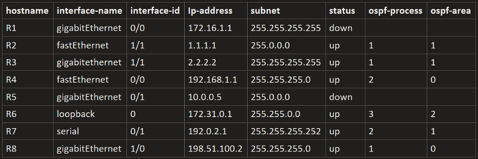
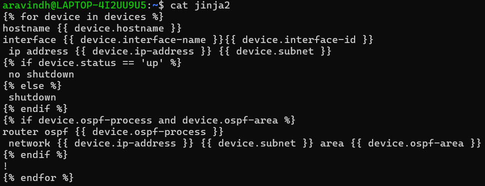

Jinja2 is a powerful templating engine for Python used to generate dynamic configuration files and scripts. It allows you to create reusable templates by inserting variables, conditions, and loops into text files. In network automation, Jinja2 simplifies device configuration by enabling the generation of customized config files based on input data like hostnames, interfaces, and IP addresses, ensuring consistency and reducing human error.
Steps to Create Jinja2 Templates for Network Automation
The Jinja2 templating system requires four key components to dynamically generate and deploy network device configurations:
- CSV File: A structured CSV file contains device-specific information such as hostname, interface details, IP addresses, and SSH credentials. This acts as the data source for generating personalized configurations for each device.
- Jinja2 Template: This is a reusable configuration template with placeholders (e.g.,
{{ hostname }},{{ interfaces }}) that represent variable fields. Jinja2 uses this structure to produce consistent and scalable configuration files based on the input data. - Template Renderer: A Python script reads the CSV data and renders the Jinja2 template using it. This script iterates through each device’s data and creates a complete configuration file for each one.
- Deployment Script with Netmiko: Finally, a Python script using the Netmiko library establishes an SSH connection to each device and pushes the rendered configuration files. This automates the deployment process and ensures the configurations are applied accurately.
CSV File
This CSV file serves as the data source for rendering Jinja2 templates. Each row represents a network device interface configuration, while the header defines the key fields used in the template.
- hostname: Name of the network device (e.g., R1, R2).
- interface-name: Type of interface (e.g., gigabitEthernet, fastEthernet, serial).
- interface-id: Slot/port identifier of the interface (e.g., 0/0, 1/1).
- ip-address: IP address assigned to the interface.
- subnet: Subnet mask for the IP address.
- status: Interface status (up or down).
- ospf-process: OSPF process ID to be used on the interface (optional).
- ospf-area: OSPF area ID associated with the interface (optional).

Jinja2 Template
Jinja2 template used to generate interface configurations for network devices based on structured data:

Each device in the devices list corresponds to a row from the CSV file. When the CSV is parsed in Python, each row is converted into a dictionary where the column headers become keys. For example:
device.hostname→ value from the hostname columndevice.interface-name→ value from interface-namedevice.ip-address→ pulled from the ip-address column of the CSVdevice.subnet,status,ospf-process, andospf-areaare similarly accessed
Template Render
The template renderer script automates the creation of individual configuration files for each network device by combining structured data from a CSV file with a reusable Jinja2 template.
What It Does:
- Parses the CSV File: The script reads data from a CSV file where each row represents a device's interface and configuration details. Each row is loaded into a Python dictionary.
- Loads the Jinja2 Template: A Jinja2 configuration template is used as a blueprint. It contains placeholders like
{{ device.hostname }}and{{ device.ip-address }}which will be filled with data from the CSV. - Generates Device Configurations: For every device in the CSV, the script renders a complete configuration using the template and that device's data.
- Saves Output per Device: The script creates a separate configuration text file for each device — named using the device’s hostname, e.g.,
R1_config.txt,R2_config.txt, etc.
Netmiko Deployment Script
The Netmiko script is the final stage in the network automation pipeline. It is responsible for connecting to each device via SSH and pushing the configuration files that were generated using the Jinja2 template.
What the Script Does:
- Reads Device SSH Information: The script reads device connection details (IP address, username, password, device type) from the CSV file or a structured Python list/dictionary. These credentials are used to establish a secure SSH session with each device.
- Loads the Config File: For each device, the script opens the corresponding configuration text file generated earlier (e.g.,
R1_config.txt,R2_config.txt) that contains all the commands prepared via Jinja2. - Connects via SSH: Using the Netmiko library, the script creates an SSH connection to the target device (such as a Cisco router or switch).
- Sends Configuration Commands: The config file is split line-by-line and sent as a sequence of commands using Netmiko’s
send_config_set()method, which enters configuration mode and applies the changes.